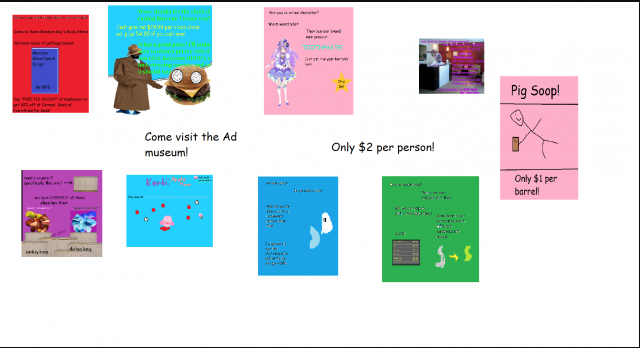
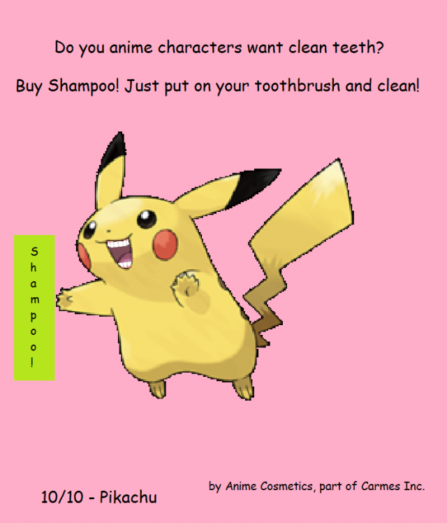
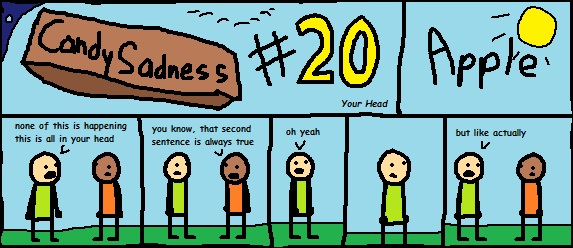
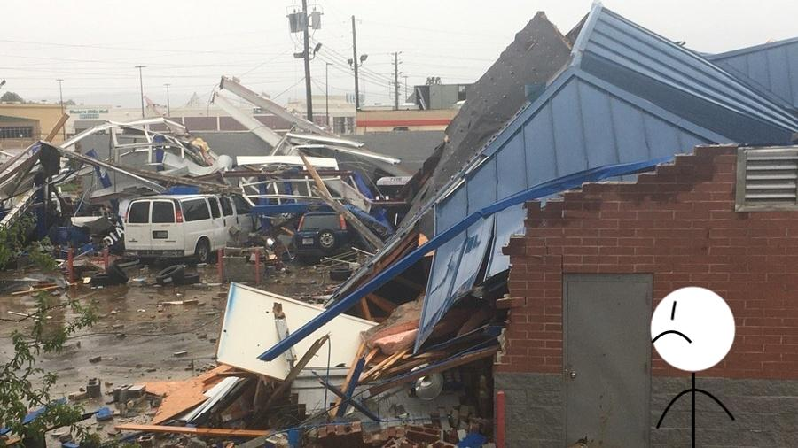

Episode 36: November 12th, 2019
Back to News Archive
| Back to Homepage | Back to Shef Werld<< Previous Episode | >> Next Episode

"Pokémon chat
Pokémon chat"
$5.00 | ~8 ghost dollars | ⭐25 coins
Does not include potential cost from surprise mechanics (they're not lootboxes so it's not illegal!!!), purchases from Shef Kerbi's Apparel or preordering the Special Edition
-------------------------
SHEF KERBI RUMOURS
There have been rumours that Shef Kerbi puts Anime Cosmetics' Toothpaste in his hair (if he has hair). People think that because Shef Kerbi is the main character in the anime 'Shef Kerbi: Right Back at U'. People also think that he cleans his teeth with the new Anime Cosmetics product, Shampoo.

POPP STAH AND EARTH MIGHT BE IN PARALLEL UNIVERSES
Some scientists from Red Computer Labs came up with that Popp Stah and Earth are in parallel universes that residents of both seem to be aware of and access.
They say that because in SKNN reports, the Next Next Generation News Macheen (or whatever it is called)'s weather reports are reporting news from places known to be on Earth. They think that he can access Earth in order to do this. SKNN also once had a news report that a hurricane named 'DisneyLand' hit Canada (also on Earth) and sent it to the Earth’s moon.
Another reason we say that is because, Earth and Popp Stah are also quite similar in some things, including climate (although they are shaped differently).
APPLE'S TECHNOLOGY AND DESIGN CORNER: Episode 8
Apple has made a bold move in the design of the upcoming iPhone model (No, I haven't gotten tired of making fun of them yet). The screen does not take up the whole front of the phone. In place of a larger screen is a circular piece that sticks out, and can be pressed down with the use of a finger. Tech experts say that this design may not catch on. "I'm still going to buy it, though. I trust Tim Apple to make the right choice," says Apple enthusiast Manny Guye.
It has been discovered that the use of the plaintext HTML tag in the latest TED Talk has transformed the building into an empty vacuum. Due to this, a few technical solutions have been proposed, such as using a vacuum cleaner to clean up the area.
In other news, Intelligent Systems forgot which Fire Emblem game is next. Also, what is the new Windows Mojave? We don't know either, but that doesn't mean we won't make an entire article or ten of wildly inaccurate speculation for maximum profit.

ACTIVISM NEWS
Some activists are starting to stand up for psychopaths all around the globe, stating that appropriation of psychopaths as heartless monsters is very inconsiderate of the feelings of psychopaths. Jim, a known psychopath, had this to say:
We also talked to a few activists about the matter, such as the turtle guy I use whenever I'm out of character ideas.
HONEY FLOOD
Today, some bee hives in Hunneh Haav have leaked, creating a flood that covered 73% of it. Because it is on a hill, some of the honey leaked into Grean Geans, flooding 2 towns (luckily only 6% of it was flooded), but not the main town.

Now I don't wanna give my own opionion but...
OPIONION WITH SHEF KERBI AND BANE STARBUCKLE
she has returned from the depths of idk
So we told you Shef Kerbi News Network fans on our Scratch page that you could post anything with the #SKNN hashtag and you could end up in our paper! In this episode, we'll respond to some of your feedback with the new SKNN format, as well as show some of your cool stuff!
We began this issue's section with
"Why would any other topic you own be irrelevant if we don't know what's relevant?"
Original comment
Show Replies
And here were your responses:
orion28364 wrote:
"I got turned into a Pokemon and the only way I can tell other people about this is through TBGchat, but everyone just thinks I'm roleplaying. What should I do?
Also, please don't block TBGchat ISPs, it's my one way that I can talk to people now."
We've managed to get that whole situation resolved during the DLTelecom press conference held on the 9th of November, so you can continue to call out for help of the TBGchat. I personally can't think of any other good websites to communicate on off the top of my head.
Random Person wrote:
"Can I throw someone into my basement?"
"Can I throw someone into my basement? Please?"
Yeah well I just heard from a police report that they have a search warrant out for someone called Person, Random so if that's you...
Carmes told me to put this in here lol
Facts Man wrote:
"All those people on the Text-Based G-Chat all at once! (possibly due to the new pokemon topic)"

Pretty nice, huh? TBGchat did hit #1 website ranking in Dreem Lend on the 9th November, measured by Red Computer Labs:
1. TBGChat: 65 visitors ▲2 from last 24 hours (▲30 from 11/1)
2. Google: 41 visitors ▼1 from last 24 hours
3. Youtube: 36 visitors ▼1 from last 24 hours
4. Twitter: 30 visitors -
5. Kerbipedia: 28 visitors ▲1 from last 24 hours
xc1 wrote:
"So I heard all about the news regarding the Pokémon chat thing, and I am expressing some interest in joining that chat. I've got one question though - as an epic 6'3 alpha male who's verified on Scratch, the world's greatest social media platform[citation needed] and who's a cool 18 year old internet dude who is lactose intolerant, who do you think would be the best fitting Pokémon for me?"
Ralts.
If you would like to submit your own opionion for Shef Kerbi, just go to our social media, on Twitter, Instagram or Scratch.
But prefably Scratch because that's what everyone uses
Ask Bane And Bane's Cat
Dear Bane,
Should I learn Esperanto?
You should. Esperanto is a very useful language. Try Duolingo or lernu.net for some free courses.
----------------
COMIX
by Apple the Cat and Reali
Candy Sadness #20

Political Comic created during DLTelecom Press Conference - by Reali

{kind=link}
SCRAPPED CONTENT
Sometimes, we create content that never makes it into SKNN. This can be due to various reasons, including but not limited to "quality control" and if the audience at the time would've been scared of it.
DISCLAIMER: You may experience cringe/nostalgia if you are or were an SKNN employee.
EAT clocks

MORE NEWS
Cats all around Dreem Land can scratch mice and other stuff even better than before with the release of Scratch 3.0. It will be applied to cats gradually at vets. Cats at Cats Inc. are currently very excited that Scratch 3.0 is finished.
BIG BOOM IN AR-KANSAS
Just yesterday, 2018 30 November there was a big boom in AR-kansas! Big trees flip over and house flip over. Many house destroyed. People say they hear a train that make a big boom. They also sawed big lights that flash and make a big boom. They also heard a big boom.
Today, many people have confusion.

"i am confusion"
Big boom continue. You guy that does the weather.
SKNN #13 is proving to be nearly impossible to translate for our Wingdings translation team. We are currently working on writing a Wingdings course on Duolingo so we can hire the public to help us translate #13 for us.
ACTIVITE
You are in a room that is slowly filling with water. You will be rescued in ten minutes. In five minutes, the room will be completely filled with water. There are three items next to you: a bucket, a straw, and a sponge. What do you do?
SKNN Halloween Crossword Answers

WEATHER
written by Zeke Teddy
Today it's mostly cloudy, decent chance of rain around 3. Maybe do something so you don't get wet if it does rain. Max of 19, min of 7.
Tomorrow it's clearing up, although there might still be a bit of rain or similar occasionally. Max 22, min 7.
THANK YOU FOR WATCH. PLEASE TUN E IN NEXT TIME FOR MORE NESW

Shef Kerbi News Network follows the guidelines and conventions set by the 1984 High Quality News Act of Dreem Lend, which states
that any news published is to be of a high quality, is to remain unbiased and to show all sides of a news report, does not attack anyone, and protects the privacy
of people whose identities don't want to be revealed.
If you would like to file a complaint regarding content use, please message SKNN through our Scratch account. We also have a Twitter and Instagram account if you
prefer.
Shef Kerbi News Network respects the ancestors of Cappy Town, and understands that they are the reason why Dreem Lend exists.
Shef Kerbi News Network is proud to be a subsidiary of Shef Werld
this website is best viewed with Ned's Escape
openPoll (Shef Werld Team)
"@openPoll Also i need some spicy memes in my life"
Original comment
CatsUnited (Shef Werld Team)
"@openPoll "idk so here's a free motivational lizard "
Original comment